Temui penghuni istimewa Solo Safari dari berbagai penjuru dunia

Elephas maximus sumatranus
Mamalia darat terbesar di Indonesia yang terancam punah
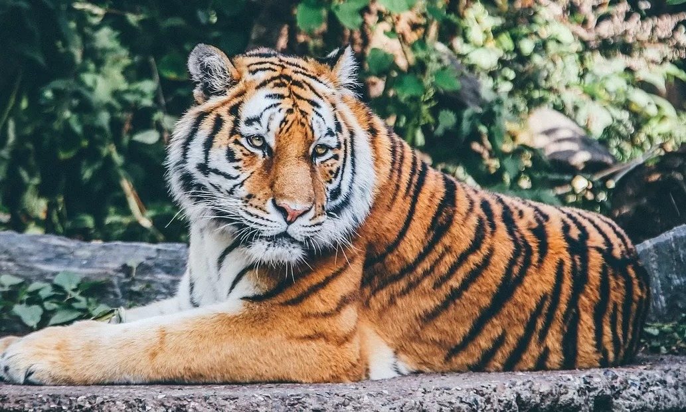
🐅Panthera tigris sumatrae
Predator puncak yang menjadi kebanggaan Indonesia
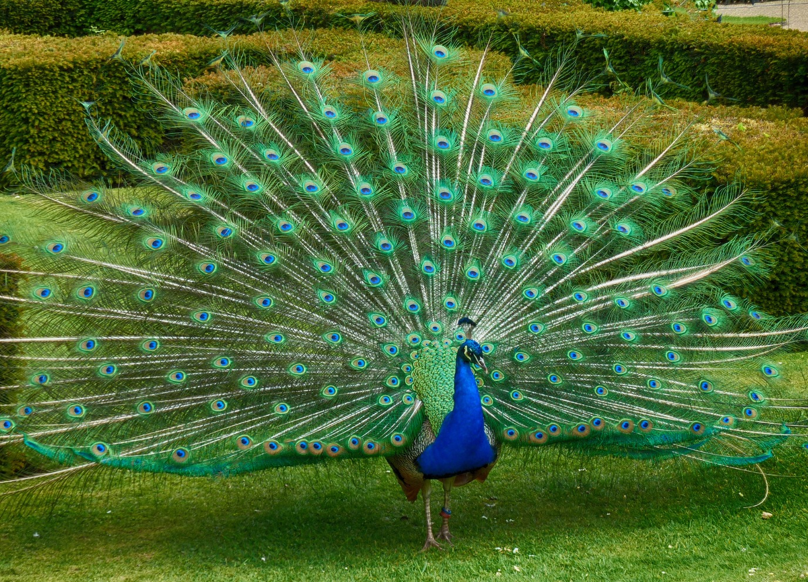
🐅Pavo muticus
Burung yang populasi aslinya tersebar di hutan tropis Asia Tenggara
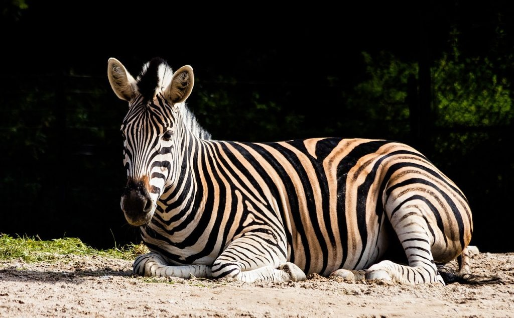
🐅Equus Quagga
Kuda liar dengan corak belang yang memukau
 🐅
🐅
Pongo Pygmaeus
Primata cerdas endemik Kalimantan.
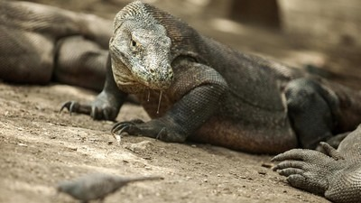
Varanus Komodoensis
Kadal terbesar di dunia dari Nusa Tenggara Timur
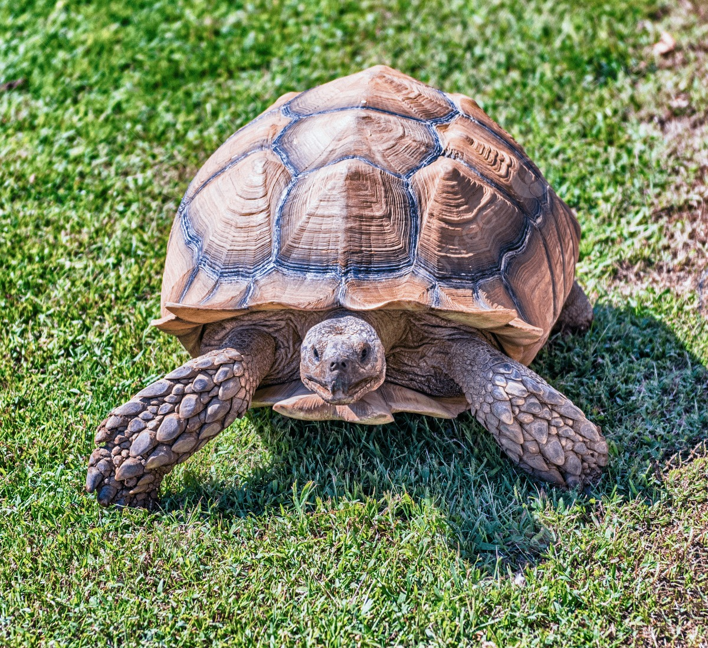
Centrochelys sulcata
Kura-kura darat terbesar ketiga di dunia, berasal dari gurun Sahara/Sahel
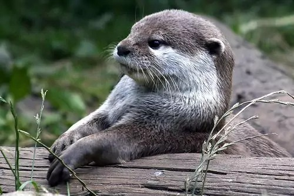
Aonyx cinereus
Sero ambrang adalah spesies berang-berang terkecil di dunia.
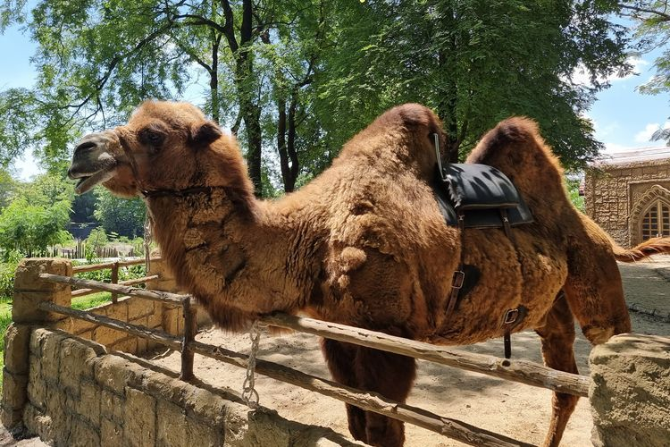
Camelus bactrianus
Merupakan satu-satunya mamalia darat yang diketahui dapat meminum air asin tanpa dampak negatif.

Axis axis
Rusa Totol dikenal dengan bulunya yang khas berwarna cokelat kemerahan dengan totol putih permanen di seluruh tubuh.
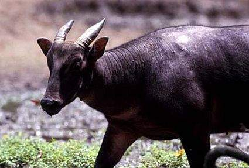
Bubalus sp.
Anoa atau kerbau kerdil adalah kerbau endemik yang hidup di daratan Pulau Sulawesi dan Pulau Buton.
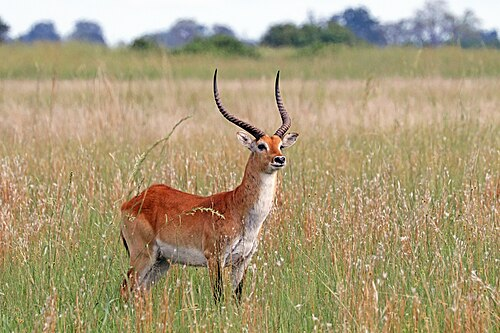
Kobus leche
Lechwe atau dikenal dengan nama lece atau antelop yang ditemukan di lahan basah Afrika selatan tengah dan diperkenalkan ke Australia.

phyton reticulatus
Spesies ular tak berbisa yang berasal dari daratan daerah tropis dan subtropis belahan timur bumi yakni benua Afrika, Asia dan juga Australia.

Struthio camelus
Burung unta merupakan burung terbesar yang masih hidup. Dengan ketinggian hingga 2,5 meter (8 kaki).
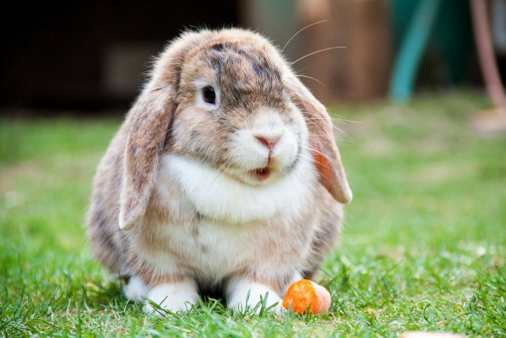
Oryctolagus cuniculus
Mamalia lagomorph yang termasuk dalam keluarga Leporidae. Ukurannya bisa mencapai 50 sentimeter dan beratnya mencapai 2,5 kilogram
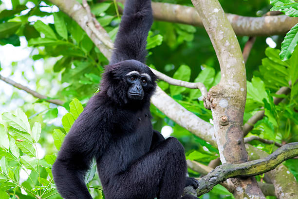
Symphalangus syndactylus
Primata yang berasal dari Asia Tenggara ini memiliki kantung gular yang membantu memperkuat suara atau seruan siamang.

Lama Glama
Hewan ini termasuk dalam famili Camelidae dan merupakan mamalia domestik asli Amerika Selatan yang banyak digunakan sebagai pengangkut barang.

Probosciger aterrimus
burung paruh bengkok endemik Papua dan Australia Utara yang berukuran sangat besar (50-68 cm), berbulu hitam smokey, dan memiliki jambul khas.